Generated from immutable evidence; no renderer or benchmark was executed.
P50/P95/P99 summarize the recorded sample population, not confidence intervals. Missing data is never replaced with zero.
Budgets: frameMs=not supplied; cpuMemoryMiB=not supplied; vramMiB=not supplied
Production input purpose=performance; scheduling diagnostics=off; app diagnostic sink=False. Validation and performance populations are not mixed.
Production: 4 passed measured processes; 8 prewarm/failed/incomplete records excluded from latency comparisons. Frames are correlated within a process; per-process quantiles are plotted individually, never pooled as independent experiments.
Production worker limits: [1]; W labels identify each limit. No results are averaged across different worker limits, blocks or executable candidates.
SceneLoad console step durations are independent producer-owned envelopes; order is console occurrence, not a shared-clock timeline. They may include nested or overlapping work and are not summed into total loading. Separate PNG decode, mip generation and upload boundaries are NA: the available logs do not establish complete independent intervals for these stages.
A TaskGraph/DAG critical path is unavailable unless dependency-linked task intervals are separately recorded. Inclusive profiler scope durations alone do not establish that path.
No dependency-linked TaskGraph intervals inside a measured frame window: DAG completion-chain plots unavailable. Diagnostic sink runs are separate from performance-off captures.
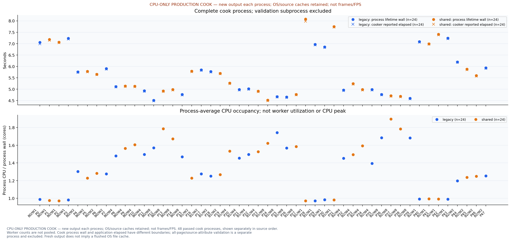
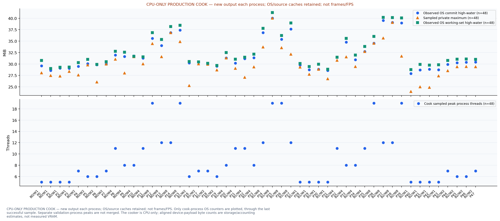
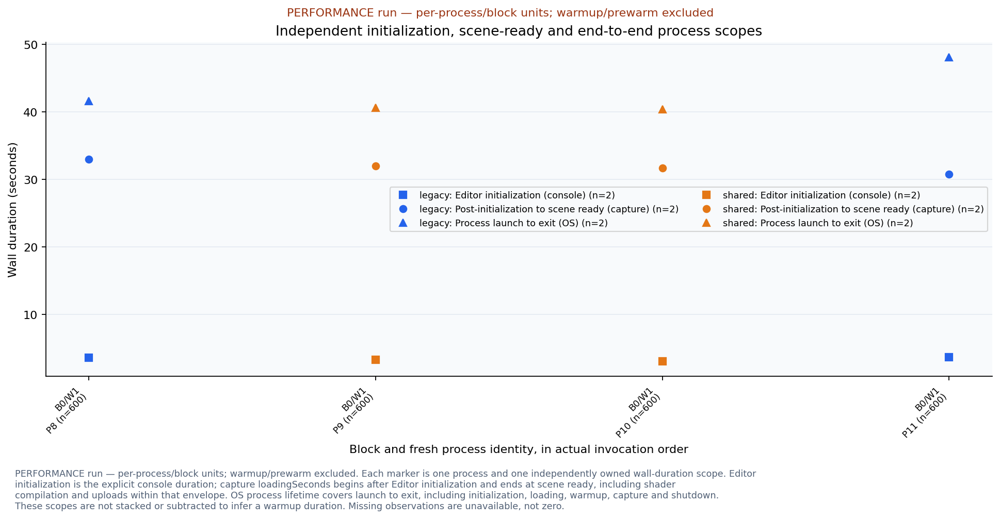
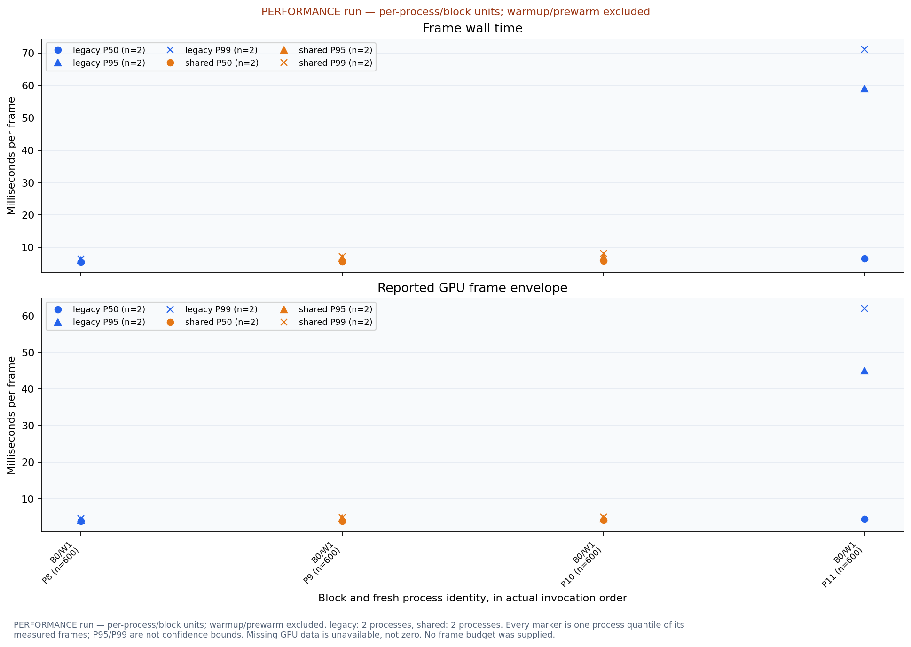
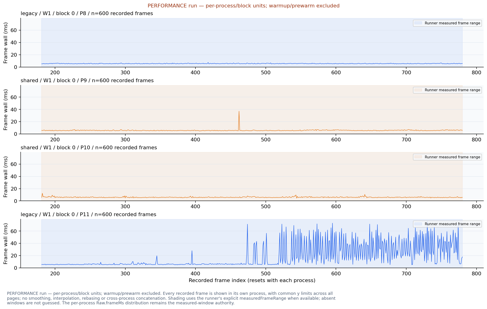
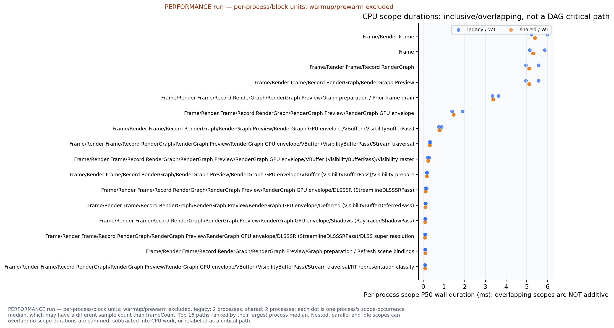
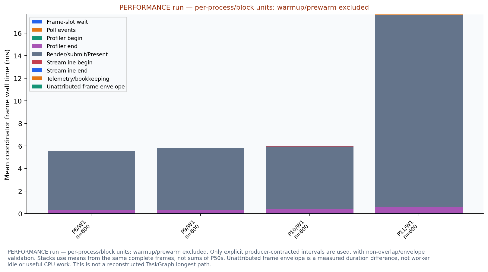
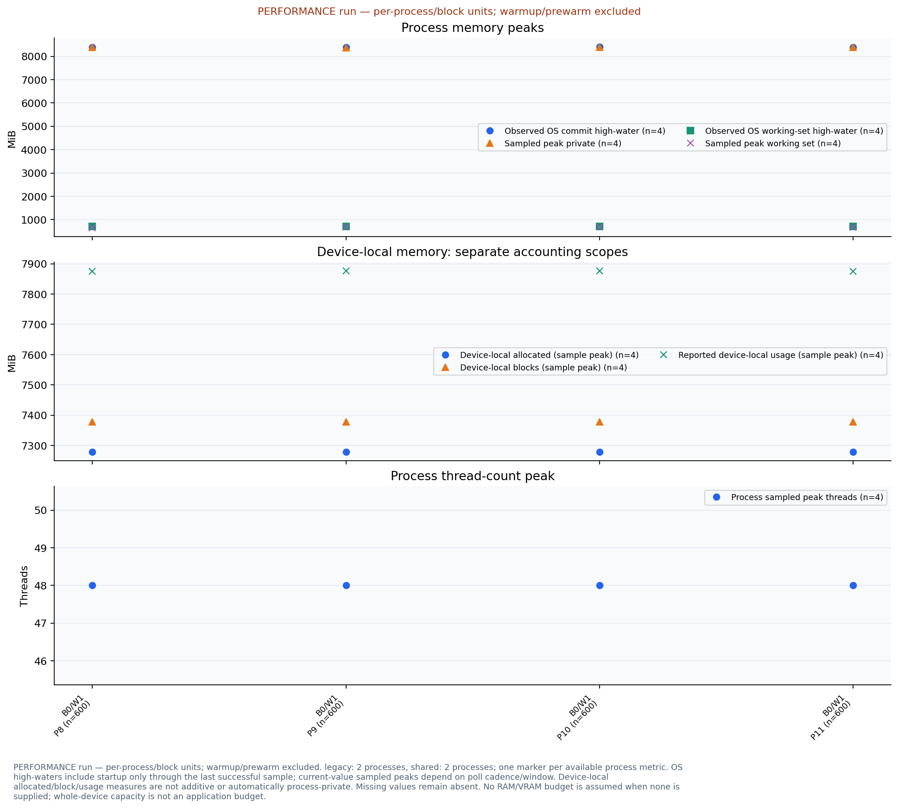
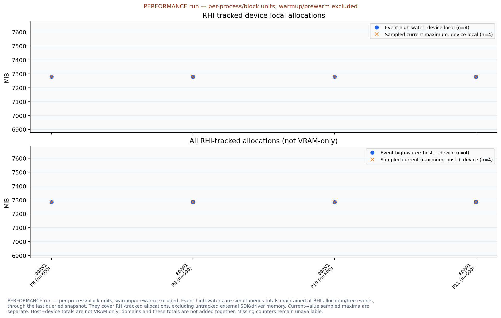
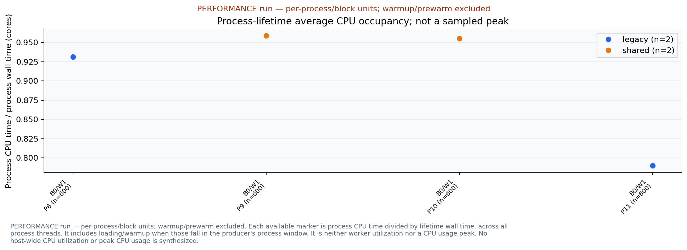
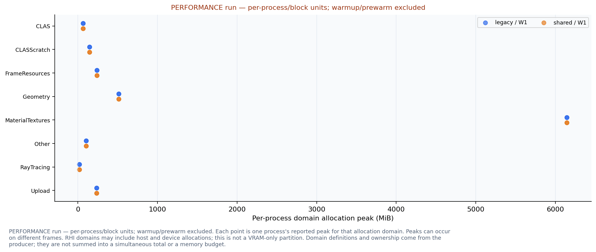
| Run | Block | Workers | Candidate | Fresh output | Payload bytes | Payload SHA256 | Validation |
|---|---|---|---|---|---|---|---|
| 0 | 0 | 1 | legacy | True | 110435932 | f5a1cf492d3f9ee538a160a41322e3fcfb173e9eae3dc3dcd9d4514d67a57c28 | all-pages |
| 1 | 0 | 1 | shared | True | 110435932 | f5a1cf492d3f9ee538a160a41322e3fcfb173e9eae3dc3dcd9d4514d67a57c28 | all-pages |
| 2 | 0 | 1 | shared | True | 110435932 | f5a1cf492d3f9ee538a160a41322e3fcfb173e9eae3dc3dcd9d4514d67a57c28 | all-pages |
| 3 | 0 | 1 | legacy | True | 110435932 | f5a1cf492d3f9ee538a160a41322e3fcfb173e9eae3dc3dcd9d4514d67a57c28 | all-pages |
| 4 | 0 | 2 | legacy | True | 110435932 | f5a1cf492d3f9ee538a160a41322e3fcfb173e9eae3dc3dcd9d4514d67a57c28 | all-pages |
| 5 | 0 | 2 | shared | True | 110435932 | f5a1cf492d3f9ee538a160a41322e3fcfb173e9eae3dc3dcd9d4514d67a57c28 | all-pages |
| 6 | 0 | 2 | shared | True | 110435932 | f5a1cf492d3f9ee538a160a41322e3fcfb173e9eae3dc3dcd9d4514d67a57c28 | all-pages |
| 7 | 0 | 2 | legacy | True | 110435932 | f5a1cf492d3f9ee538a160a41322e3fcfb173e9eae3dc3dcd9d4514d67a57c28 | all-pages |
| 8 | 0 | 4 | legacy | True | 110435932 | f5a1cf492d3f9ee538a160a41322e3fcfb173e9eae3dc3dcd9d4514d67a57c28 | all-pages |
| 9 | 0 | 4 | shared | True | 110435932 | f5a1cf492d3f9ee538a160a41322e3fcfb173e9eae3dc3dcd9d4514d67a57c28 | all-pages |
| 10 | 0 | 4 | shared | True | 110435932 | f5a1cf492d3f9ee538a160a41322e3fcfb173e9eae3dc3dcd9d4514d67a57c28 | all-pages |
| 11 | 0 | 4 | legacy | True | 110435932 | f5a1cf492d3f9ee538a160a41322e3fcfb173e9eae3dc3dcd9d4514d67a57c28 | all-pages |
| 12 | 0 | 8 | legacy | True | 110435932 | f5a1cf492d3f9ee538a160a41322e3fcfb173e9eae3dc3dcd9d4514d67a57c28 | all-pages |
| 13 | 0 | 8 | shared | True | 110435932 | f5a1cf492d3f9ee538a160a41322e3fcfb173e9eae3dc3dcd9d4514d67a57c28 | all-pages |
| 14 | 0 | 8 | shared | True | 110435932 | f5a1cf492d3f9ee538a160a41322e3fcfb173e9eae3dc3dcd9d4514d67a57c28 | all-pages |
| 15 | 0 | 8 | legacy | True | 110435932 | f5a1cf492d3f9ee538a160a41322e3fcfb173e9eae3dc3dcd9d4514d67a57c28 | all-pages |
| 16 | 1 | 2 | shared | True | 110435932 | f5a1cf492d3f9ee538a160a41322e3fcfb173e9eae3dc3dcd9d4514d67a57c28 | all-pages |
| 17 | 1 | 2 | legacy | True | 110435932 | f5a1cf492d3f9ee538a160a41322e3fcfb173e9eae3dc3dcd9d4514d67a57c28 | all-pages |
| 18 | 1 | 2 | legacy | True | 110435932 | f5a1cf492d3f9ee538a160a41322e3fcfb173e9eae3dc3dcd9d4514d67a57c28 | all-pages |
| 19 | 1 | 2 | shared | True | 110435932 | f5a1cf492d3f9ee538a160a41322e3fcfb173e9eae3dc3dcd9d4514d67a57c28 | all-pages |
| 20 | 1 | 4 | shared | True | 110435932 | f5a1cf492d3f9ee538a160a41322e3fcfb173e9eae3dc3dcd9d4514d67a57c28 | all-pages |
| 21 | 1 | 4 | legacy | True | 110435932 | f5a1cf492d3f9ee538a160a41322e3fcfb173e9eae3dc3dcd9d4514d67a57c28 | all-pages |
| 22 | 1 | 4 | legacy | True | 110435932 | f5a1cf492d3f9ee538a160a41322e3fcfb173e9eae3dc3dcd9d4514d67a57c28 | all-pages |
| 23 | 1 | 4 | shared | True | 110435932 | f5a1cf492d3f9ee538a160a41322e3fcfb173e9eae3dc3dcd9d4514d67a57c28 | all-pages |
| 24 | 1 | 8 | shared | True | 110435932 | f5a1cf492d3f9ee538a160a41322e3fcfb173e9eae3dc3dcd9d4514d67a57c28 | all-pages |
| 25 | 1 | 8 | legacy | True | 110435932 | f5a1cf492d3f9ee538a160a41322e3fcfb173e9eae3dc3dcd9d4514d67a57c28 | all-pages |
| 26 | 1 | 8 | legacy | True | 110435932 | f5a1cf492d3f9ee538a160a41322e3fcfb173e9eae3dc3dcd9d4514d67a57c28 | all-pages |
| 27 | 1 | 8 | shared | True | 110435932 | f5a1cf492d3f9ee538a160a41322e3fcfb173e9eae3dc3dcd9d4514d67a57c28 | all-pages |
| 28 | 1 | 1 | shared | True | 110435932 | f5a1cf492d3f9ee538a160a41322e3fcfb173e9eae3dc3dcd9d4514d67a57c28 | all-pages |
| 29 | 1 | 1 | legacy | True | 110435932 | f5a1cf492d3f9ee538a160a41322e3fcfb173e9eae3dc3dcd9d4514d67a57c28 | all-pages |
| 30 | 1 | 1 | legacy | True | 110435932 | f5a1cf492d3f9ee538a160a41322e3fcfb173e9eae3dc3dcd9d4514d67a57c28 | all-pages |
| 31 | 1 | 1 | shared | True | 110435932 | f5a1cf492d3f9ee538a160a41322e3fcfb173e9eae3dc3dcd9d4514d67a57c28 | all-pages |
| 32 | 2 | 4 | legacy | True | 110435932 | f5a1cf492d3f9ee538a160a41322e3fcfb173e9eae3dc3dcd9d4514d67a57c28 | all-pages |
| 33 | 2 | 4 | shared | True | 110435932 | f5a1cf492d3f9ee538a160a41322e3fcfb173e9eae3dc3dcd9d4514d67a57c28 | all-pages |
| 34 | 2 | 4 | shared | True | 110435932 | f5a1cf492d3f9ee538a160a41322e3fcfb173e9eae3dc3dcd9d4514d67a57c28 | all-pages |
| 35 | 2 | 4 | legacy | True | 110435932 | f5a1cf492d3f9ee538a160a41322e3fcfb173e9eae3dc3dcd9d4514d67a57c28 | all-pages |
| 36 | 2 | 8 | legacy | True | 110435932 | f5a1cf492d3f9ee538a160a41322e3fcfb173e9eae3dc3dcd9d4514d67a57c28 | all-pages |
| 37 | 2 | 8 | shared | True | 110435932 | f5a1cf492d3f9ee538a160a41322e3fcfb173e9eae3dc3dcd9d4514d67a57c28 | all-pages |
| 38 | 2 | 8 | shared | True | 110435932 | f5a1cf492d3f9ee538a160a41322e3fcfb173e9eae3dc3dcd9d4514d67a57c28 | all-pages |
| 39 | 2 | 8 | legacy | True | 110435932 | f5a1cf492d3f9ee538a160a41322e3fcfb173e9eae3dc3dcd9d4514d67a57c28 | all-pages |
| 40 | 2 | 1 | legacy | True | 110435932 | f5a1cf492d3f9ee538a160a41322e3fcfb173e9eae3dc3dcd9d4514d67a57c28 | all-pages |
| 41 | 2 | 1 | shared | True | 110435932 | f5a1cf492d3f9ee538a160a41322e3fcfb173e9eae3dc3dcd9d4514d67a57c28 | all-pages |
| 42 | 2 | 1 | shared | True | 110435932 | f5a1cf492d3f9ee538a160a41322e3fcfb173e9eae3dc3dcd9d4514d67a57c28 | all-pages |
| 43 | 2 | 1 | legacy | True | 110435932 | f5a1cf492d3f9ee538a160a41322e3fcfb173e9eae3dc3dcd9d4514d67a57c28 | all-pages |
| 44 | 2 | 2 | legacy | True | 110435932 | f5a1cf492d3f9ee538a160a41322e3fcfb173e9eae3dc3dcd9d4514d67a57c28 | all-pages |
| 45 | 2 | 2 | shared | True | 110435932 | f5a1cf492d3f9ee538a160a41322e3fcfb173e9eae3dc3dcd9d4514d67a57c28 | all-pages |
| 46 | 2 | 2 | shared | True | 110435932 | f5a1cf492d3f9ee538a160a41322e3fcfb173e9eae3dc3dcd9d4514d67a57c28 | all-pages |
| 47 | 2 | 2 | legacy | True | 110435932 | f5a1cf492d3f9ee538a160a41322e3fcfb173e9eae3dc3dcd9d4514d67a57c28 | all-pages |
| Candidate | Executable | SHA256 |
|---|---|---|
| legacy | C:\Users\11252\.codex\worktrees\3379\metallic\build-issue73-production\Source\MetallicMeshletCookLegacy.exe | a7d2ecb195aaa2b46c106de85347a6505358efbf71f0b501fff959417bd618d3 |
| shared | C:\Users\11252\.codex\worktrees\3379\metallic\build-issue73-production\Source\MetallicMeshletCook.exe | 7757ac7408bc138653c6f3616a97384890438de2cc3162b4a6c29a1bcd5b8506 |
| Run | Block | Workers | Candidate | Editor initialization (console) (s) | Post-initialization to scene ready (capture) (s) | Process launch to exit (OS) (s) |
|---|---|---|---|---|---|---|
| 8 | 0 | 1 | legacy | 3.558960 | 32.952161 | 41.645820 |
| 9 | 0 | 1 | shared | 3.254980 | 31.997550 | 40.581452 |
| 10 | 0 | 1 | shared | 3.073880 | 31.691200 | 40.419562 |
| 11 | 0 | 1 | legacy | 3.660240 | 30.744464 | 48.068860 |
| Run | Block | Workers | Candidate | Console occurrence | Owner step | Wall duration (ms) |
|---|---|---|---|---|---|---|
| 8 | 0 | 1 | legacy | 1 | tinygltf file import | 51.66 |
| 8 | 0 | 1 | legacy | 2 | asset metadata, images, textures, and materials | 0.06 |
| 8 | 0 | 1 | legacy | 3 | scene graph traversal and primitive extraction | 0.44 |
| 9 | 0 | 1 | shared | 1 | tinygltf file import | 58.17 |
| 9 | 0 | 1 | shared | 2 | asset metadata, images, textures, and materials | 0.06 |
| 9 | 0 | 1 | shared | 3 | scene graph traversal and primitive extraction | 0.58 |
| 10 | 0 | 1 | shared | 1 | tinygltf file import | 50.76 |
| 10 | 0 | 1 | shared | 2 | asset metadata, images, textures, and materials | 0.05 |
| 10 | 0 | 1 | shared | 3 | scene graph traversal and primitive extraction | 0.36 |
| 11 | 0 | 1 | legacy | 1 | tinygltf file import | 36.61 |
| 11 | 0 | 1 | legacy | 2 | asset metadata, images, textures, and materials | 0.12 |
| 11 | 0 | 1 | legacy | 3 | scene graph traversal and primitive extraction | 0.82 |
| Scope path | Candidate | Workers | Available occurrences per process |
|---|---|---|---|
| Frame/Render Frame | legacy | 1 | P8: n=600; P11: n=600 |
| Frame/Render Frame | shared | 1 | P9: n=600; P10: n=600 |
| Frame | legacy | 1 | P8: n=600; P11: n=600 |
| Frame | shared | 1 | P9: n=600; P10: n=600 |
| Frame/Render Frame/Record RenderGraph | legacy | 1 | P8: n=600; P11: n=600 |
| Frame/Render Frame/Record RenderGraph | shared | 1 | P9: n=600; P10: n=600 |
| Frame/Render Frame/Record RenderGraph/RenderGraph Preview | legacy | 1 | P8: n=600; P11: n=600 |
| Frame/Render Frame/Record RenderGraph/RenderGraph Preview | shared | 1 | P9: n=600; P10: n=600 |
| Frame/Render Frame/Record RenderGraph/RenderGraph Preview/Graph preparation / Prior frame drain | legacy | 1 | P8: n=600; P11: n=600 |
| Frame/Render Frame/Record RenderGraph/RenderGraph Preview/Graph preparation / Prior frame drain | shared | 1 | P9: n=600; P10: n=600 |
| Frame/Render Frame/Record RenderGraph/RenderGraph Preview/RenderGraph GPU envelope | legacy | 1 | P8: n=600; P11: n=600 |
| Frame/Render Frame/Record RenderGraph/RenderGraph Preview/RenderGraph GPU envelope | shared | 1 | P9: n=600; P10: n=600 |
| Frame/Render Frame/Record RenderGraph/RenderGraph Preview/RenderGraph GPU envelope/VBuffer (VisibilityBufferPass) | legacy | 1 | P8: n=600; P11: n=600 |
| Frame/Render Frame/Record RenderGraph/RenderGraph Preview/RenderGraph GPU envelope/VBuffer (VisibilityBufferPass) | shared | 1 | P9: n=600; P10: n=600 |
| Frame/Render Frame/Record RenderGraph/RenderGraph Preview/RenderGraph GPU envelope/VBuffer (VisibilityBufferPass)/Stream traversal | legacy | 1 | P8: n=600; P11: n=600 |
| Frame/Render Frame/Record RenderGraph/RenderGraph Preview/RenderGraph GPU envelope/VBuffer (VisibilityBufferPass)/Stream traversal | shared | 1 | P9: n=600; P10: n=600 |
| Frame/Render Frame/Record RenderGraph/RenderGraph Preview/RenderGraph GPU envelope/VBuffer (VisibilityBufferPass)/Visibility raster | legacy | 1 | P8: n=600; P11: n=600 |
| Frame/Render Frame/Record RenderGraph/RenderGraph Preview/RenderGraph GPU envelope/VBuffer (VisibilityBufferPass)/Visibility raster | shared | 1 | P9: n=600; P10: n=600 |
| Frame/Render Frame/Record RenderGraph/RenderGraph Preview/RenderGraph GPU envelope/VBuffer (VisibilityBufferPass)/Visibility prepare | legacy | 1 | P8: n=600; P11: n=600 |
| Frame/Render Frame/Record RenderGraph/RenderGraph Preview/RenderGraph GPU envelope/VBuffer (VisibilityBufferPass)/Visibility prepare | shared | 1 | P9: n=600; P10: n=600 |
| Frame/Render Frame/Record RenderGraph/RenderGraph Preview/RenderGraph GPU envelope/DLSSSR (StreamlineDLSSSRPass) | legacy | 1 | P8: n=600; P11: n=600 |
| Frame/Render Frame/Record RenderGraph/RenderGraph Preview/RenderGraph GPU envelope/DLSSSR (StreamlineDLSSSRPass) | shared | 1 | P9: n=600; P10: n=600 |
| Frame/Render Frame/Record RenderGraph/RenderGraph Preview/RenderGraph GPU envelope/Deferred (VisibilityBufferDeferredPass) | legacy | 1 | P8: n=600; P11: n=600 |
| Frame/Render Frame/Record RenderGraph/RenderGraph Preview/RenderGraph GPU envelope/Deferred (VisibilityBufferDeferredPass) | shared | 1 | P9: n=600; P10: n=600 |
| Frame/Render Frame/Record RenderGraph/RenderGraph Preview/RenderGraph GPU envelope/Shadows (RayTracedShadowPass) | legacy | 1 | P8: n=600; P11: n=600 |
| Frame/Render Frame/Record RenderGraph/RenderGraph Preview/RenderGraph GPU envelope/Shadows (RayTracedShadowPass) | shared | 1 | P9: n=600; P10: n=600 |
| Frame/Render Frame/Record RenderGraph/RenderGraph Preview/RenderGraph GPU envelope/DLSSSR (StreamlineDLSSSRPass)/DLSS super resolution | legacy | 1 | P8: n=600; P11: n=600 |
| Frame/Render Frame/Record RenderGraph/RenderGraph Preview/RenderGraph GPU envelope/DLSSSR (StreamlineDLSSSRPass)/DLSS super resolution | shared | 1 | P9: n=600; P10: n=600 |
| Frame/Render Frame/Record RenderGraph/RenderGraph Preview/Graph preparation / Refresh scene bindings | legacy | 1 | P8: n=600; P11: n=600 |
| Frame/Render Frame/Record RenderGraph/RenderGraph Preview/Graph preparation / Refresh scene bindings | shared | 1 | P9: n=600; P10: n=600 |
| Frame/Render Frame/Record RenderGraph/RenderGraph Preview/RenderGraph GPU envelope/VBuffer (VisibilityBufferPass)/Stream traversal/RT representation classify | legacy | 1 | P8: n=600; P11: n=600 |
| Frame/Render Frame/Record RenderGraph/RenderGraph Preview/RenderGraph GPU envelope/VBuffer (VisibilityBufferPass)/Stream traversal/RT representation classify | shared | 1 | P9: n=600; P10: n=600 |
| Candidate | Executable | SHA256 |
|---|---|---|
| legacy | C:\Users\11252\.codex\worktrees\3379\metallic\build-issue73-production\Source\MetallicCPUJobsLegacy.exe | b19a266982b803b1363feeed446cfbc7d21c0b563faf9e9f8f4e7e89803c6142 |
| shared | C:\Users\11252\.codex\worktrees\3379\metallic\build-issue73-production\Source\Metallic.exe | 361d1651beb963a5c1418892bbe5e8695e2628c0c0eda8ce516640ef5caa8b67 |
| Workers | Scene | Graph | Camera | Output extent | Render extent | Recording limit | Validation |
|---|---|---|---|---|---|---|---|
| 1 | E:/metallic/Asset/SuperSponza/NewSponza_Main_glTF_003.gltf | [{'name': 'VBuffer', 'properties': {'asyncSoftwareRaster': False, 'autoBuildStreamAsset': False, 'autoLod': True, 'clasEmptyChunkRetentionFrames': 30, 'coldPageRetentionFrames': 120, 'compactClas': True, 'compactShadingAttributes': True, 'distributedDemandMinGroups': 65536, 'distributedPageDemand': True, 'enableClas': True, 'enableClusterRtx': True, 'growClasBytes': 67108864, 'hybridRaster': True, 'instanceFrustumCull': True, 'instanceHzbCull': True, 'lodPixelError': 1.5, 'materialTextureBudgetMiB': 8192, 'materialTextureColdFrames': 180, 'materialTextureMaskMaxDimension': 512, 'materialTextureMaxDimension': 128, 'materialTextureRefineDimension': 512, 'maxActiveGroups': 1048575, 'maxBlasBytes': 536870912, 'maxClasBuildClusters': 8192, 'maxClasBytes': 2147483648, 'maxGpuPageRequests': 65536, 'maxGpuPageUnloadRequests': 65536, 'maxLockedFallbackPages': 65536, 'maxPageLoadsInFlight': 1024, 'maxPageUploadsPerFrame': 256, 'maxRasterCandidates': 8388608, 'maxResidentBytes': 536870912, 'maxResidentPages': 0, 'maxTraversalWorkItems': 1048576, 'maxTraversalWorkers': 4096, 'maxUploadBytesPerFrame': 8388608, 'meshletFrustumCull': True, 'meshletNormalConeCull': False, 'pageLoadConcurrency': 4, 'path': 'E:/metallic/Asset/SuperSponza/NewSponza_Main_glTF_003.gltf', 'persistentClasGrowBytes': 33554432, 'sceneBinding': 'asset', 'startClasBytes': 0, 'streamAssetPath': 'E:/metallic/Asset/SuperSponza/NewSponza_Main_glTF_003.gltf.meshstream.bin', 'viewBinding': 'global', 'visualization': 'none'}, 'type': 'VisibilityBufferPass'}, {'name': 'Shadows', 'properties': {'materialTextureBudgetMiB': 8192, 'materialTextureColdFrames': 180, 'materialTextureMaskMaxDimension': 512, 'materialTextureMaxDimension': 128, 'materialTextureRefineDimension': 512, 'path': 'E:/metallic/Asset/SuperSponza/NewSponza_Main_glTF_003.gltf', 'rayTracedShadows': True, 'shadowBias': 0.01, 'shadowLightIndex': -1, 'shadowLightRadius': 0.05, 'shadowRayLength': 100000.0, 'sigmaDenoise': True, 'sigmaHistoryLength': 5}, 'type': 'RayTracedShadowPass'}, {'name': 'Deferred', 'properties': {'exportUpscalerGuides': True, 'materialBinning': True, 'materialTextureBudgetMiB': 8192, 'materialTextureColdFrames': 180, 'materialTextureMaskMaxDimension': 512, 'materialTextureMaxDimension': 128, 'materialTextureRefineDimension': 512, 'outputLinear': True, 'path': 'E:/metallic/Asset/SuperSponza/NewSponza_Main_glTF_003.gltf'}, 'type': 'VisibilityBufferDeferredPass'}, {'name': 'DLSSSR', 'properties': {'exportOutputGuides': True, 'mode': 'Quality'}, 'type': 'StreamlineDLSSSRPass'}, {'name': 'AutoExposure', 'properties': {}, 'type': 'AutoExposurePass'}, {'name': 'DLSSNR', 'properties': {'enabled': False, 'fallbackToInput': True, 'intensity': 1.0, 'preset': 0, 'style': 0}, 'type': 'DLSSNRPass'}, {'name': 'FinalBlit', 'properties': {}, 'type': 'FinalBlitPass'}, {'name': 'ColorGrading', 'properties': {'toneCurve': 'aces2'}, 'type': 'ColorGradingLUTPass'}] | {'center': [-7.84351921081543, 1.786533236503601, -0.6762740612030029], 'eye': [-8.807430267333984, 1.5922194719314575, -0.8582578301429749], 'fovDegrees': 58.51197814941406, 'orthoHeight': 2.0, 'projection': 'perspective', 'up': [-0.19094055891036987, 0.9809394478797913, -0.03604902699589729], 'zfar': 10000.0, 'znear': 0.10000000149011612} | [1920, 1080] | [1280, 720] | 1 | False |
| Run | Block | Workers | Candidate | Measured frames | Frame P50 ms | Frame P95 ms | Frame P99 ms |
|---|---|---|---|---|---|---|---|
| 8 | 0 | 1 | legacy | 600 | 5.5279 | 6.1239 | 6.4502 |
| 9 | 0 | 1 | shared | 600 | 5.7130 | 6.6274 | 7.0597 |
| 10 | 0 | 1 | shared | 600 | 5.8290 | 7.1159 | 8.0692 |
| 11 | 0 | 1 | legacy | 600 | 6.5399 | 59.1116 | 71.1660 |